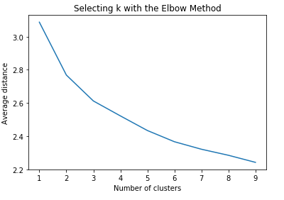
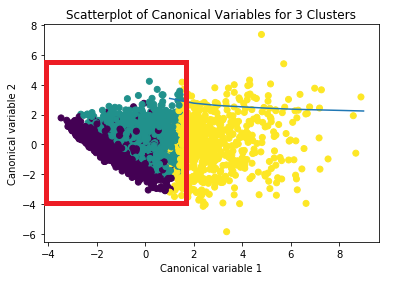
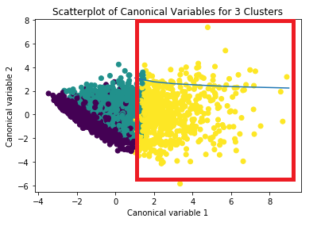

Continuous Assessment conducting cluster analysis
Create a new file called Lab09_clustering.py
To run a K-means cluster analysis in Python, first we call in the libraries we need.
In addition to pandas, numpy and matplotlib libraries we'll need the train_test_split function from the sklearn.cross_validation library, and the pre processing function from the sklearn library. Finally we need the k-Means function fro sklearn.cluster library.
from pandas import Series, DataFrame
import pandas as pd
import numpy as np
import matplotlib.pylab as plt
from sklearn.model_selection import train_test_split
from sklearn import preprocessing
from sklearn.cluster import KMeansSave the following csv file to your working directory
We will load this file into our dataframe and conduct some basic data management.
"""
Data Management
"""
data = pd.read_csv("lab11_addhealth.csv")
#upper-case all DataFrame column names
data.columns = map(str.upper, data.columns)
# Data Management
data_clean = data.dropna()
# subset clustering variables
cluster=data_clean[['ALCEVR1','MAREVER1','ALCPROBS1','DEVIANT1','VIOL1',
'DEP1','ESTEEM1','SCHCONN1','PARACTV', 'PARPRES','FAMCONCT']]
cluster.describe()Once the data is loaded we convert all column names to uppercase, and then clean out all observations that have missing data on any variables using the dropna function. We then create a data set called cluster which only contains the variables to used for clustering.
In cluster analysis variables with large values contribute more to the distance calculations. Variables measured on different scales should be standardized prior to clustering, so that the solution is not driven by variables measured on larger scales. We use the following code to standardize the clustering variables to have a mean of 0, and a standard deviation of 1. This ensures all variables contribute equally to a scale when items are added together.
# standardize clustering variables to have mean=0 and sd=1
clustervar=cluster.copy()
clustervar['ALCEVR1']=preprocessing.scale(clustervar['ALCEVR1'].astype('float64'))
clustervar['ALCPROBS1']=preprocessing.scale(clustervar['ALCPROBS1'].astype('float64'))
clustervar['MAREVER1']=preprocessing.scale(clustervar['MAREVER1'].astype('float64'))
clustervar['DEP1']=preprocessing.scale(clustervar['DEP1'].astype('float64'))
clustervar['ESTEEM1']=preprocessing.scale(clustervar['ESTEEM1'].astype('float64'))
clustervar['VIOL1']=preprocessing.scale(clustervar['VIOL1'].astype('float64'))
clustervar['DEVIANT1']=preprocessing.scale(clustervar['DEVIANT1'].astype('float64'))
clustervar['FAMCONCT']=preprocessing.scale(clustervar['FAMCONCT'].astype('float64'))
clustervar['SCHCONN1']=preprocessing.scale(clustervar['SCHCONN1'].astype('float64'))
clustervar['PARACTV']=preprocessing.scale(clustervar['PARACTV'].astype('float64'))
clustervar['PARPRES']=preprocessing.scale(clustervar['PARPRES'].astype('float64'))
# split data into train and test sets
clus_train, clus_test = train_test_split(clustervar, test_size=.3, random_state=123)To standardize the clustering variables we will first create a copy of the cluster data frame and name it clustervar, then we use the preprocessing.scale function to transform the clustering variables to have a mean of 0 and a standard deviation of 1. Astype float64 ensures that my clustering variables have a numeric format, and we will do this for all the clustering variables.
The second part of the code is where we split the data into train and test sets. The split function in the sklearn cross validation library randomly splits the clustering variable data set into a training data set consisting of 70% of the total observations, and a test data set consisting of the other 30% of the observations.
The test_size option tells Python to randomly place 0.3, that is 30% of the observations in the test data set that we named clus_test. By default the other 70% of the observations are placed in the clus_train training dataset. The random_state option specifies a random number seat to ensure that the data are randomly split the same way if I run the code again.
Now we are ready to run our cluster analysis, because we don't know how many clusters actually exist in the population for a range of values on the number of clusters before we begin we'll import the cdist function from the scipy.spatial.distance library. In this example we will use it to calculate the average distance of the observations from the cluster centroids. Later, we can plot this average distance measure to help us figure out how many clusters may be optimal, then we will create an object called clusters that will include numbers in the range between 1 and 10. We will use this object when we specify the number of clusters we want to test, which will give us the cluster solutions for k equals 1 to k equals 9 clusters. In the last line of code we create an object called meandist that will be used to store the average distance values that we will calculate for the 1 to 9 cluster solutions.
# k-means cluster analysis for 1-9 clusters
from scipy.spatial.distance import cdist
clusters=range(1,10)
meandist=[]The next piece of code runs the cluster analysis.
for k in clusters:
model=KMeans(n_clusters=k)
model.fit(clus_train)
clusassign=model.predict(clus_train)
meandist.append(sum(np.min(cdist(clus_train, model.cluster_centers_, 'euclidean'), axis=1))
/ clus_train.shape[0])This code tells Python to run the cluster analysis code for each value of k in the cluster's object. Then the k-Means function from the ski learning cluster library to run the cluster analysis. In parentheses n_clusters indicates the number of clusters, which in our example we substitute with k to tell Python to run the cluster analysis for 1 through 9 clusters.
Then we create an object called clusassign that will store for each observation the cluster number to which it was assigned based on the cluster analysis. Model.predict asks that the results of the cluster analysis stored in the model object be used to predict the closest cluster that each observation belongs to.
Then we calculate an average distance measure for each cluster solution. The code following meandist.append computes the average of the sum of the distances between each observation in the cluster centroids.
The formula first calculates the distance between each observation and the cluster centroids where the number of centroids is equal to the number of clusters that were specified in the cluster analysis in the first set of parentheses.
cdist(clus_train, model.cluster_centers_, 'euclidean')This tells Python to use cdist to calculate the distance between each observation in the clus_train data set in the cluster centroids using Euclidean distance, then we use np.min function to determine the smallest or minimum difference for each observation among the cluster centroids. Axis equals 1 means that the minimum should be determined by examining the distance between the observation and each centroid taking the smallest distance as the value of the minimum. Then we use the sum function to sum the minimum distances across all observations. Finally, the / clus_train.shape with 0 in brackets divides the sum of the distances by the number of observations in the clus_train data set (.shape[0] returns the number of observations in the clus_train data set).
Now that we have the average distance calculated for each of the 1 to 9 cluster solutions we can plot the elbow curve using the map plot lib plot function that we imported as plt.
plt.plot(clusters, meandist)
plt.xlabel('Number of clusters')
plt.ylabel('Average distance')
plt.title('Selecting k with the Elbow Method')
Clusters is the object that includes the values of 1 through 9 for the range of clusters we specified and meandist is the average distance value that we just calculated. So what this plot shows is the decrease in the average minimum distance of the observations from the cluster centroids for each of the cluster solutions. We can see that the average distance decreases as the number of clusters increases. Since the goal of cluster analysis is to minimize the distance between observations and their assigned clusters we want to chose the fewest numbers of clusters that provides a low average distance.
What we're looking for in this plot is a bend in the elbow that kind of shows where the average distance value might be levelling off such that adding more clusters doesn't decrease the average distance as much. You can see how subjective this is though. There appears to be a couple of bends at the line at two clusters and at three clusters, but it's not very clear. To help us figure out which of the solutions is best we should further examine the cluster solutions for at least the two and three cluster solutions to see whether they do not overlap, whether the patterns of means on the clustering variables are unique and meaningful, and whether there are significant differences between the clusters on our external validation variable GPA.
This time we re run the cluster analysis and ask for 3 clusters.
So we create an object, model 3, which will contain the results from the cluster analysis with 3 clusters.
model3=KMeans(n_clusters=3)
model3.fit(clus_train)
clusassign=model3.predict(clus_train)The first thing we want to try is to graph the clusters in a scatter plot to see whether or not they overlap with each other in terms of their location in the p dimensional space. However, with 11 clustering variables that means we have 11 dimensions, which would be impossible to visualize. A scatter plot will work to visualize a few dimensions, but not 11 dimensions. So what we're going to use is use canonical discriminate analysis, which is a data reduction technique that creates a smaller number of variables that are linear combinations of the 11 clustering variables.
The new variables, called canonical variables, are ordered in terms of the proportion of variance and the clustering variables that is accounted for by each of the canonical variables. So the first canonical variable will count for the largest proportion of the variance. The second canonical variable will account for the next largest proportion of variance, and so on. Usually, the majority of the variance in the clustering variables will be accounted for by the first couple of canonical variables and those are the variables that we can plot. In Python, we can use the PCA function and the sklearn decomposition library to conduct the canonical discriminate analysis.
from sklearn.decomposition import PCA
pca_2 = PCA(2)
plot_columns = pca_2.fit_transform(clus_train)
plt.scatter(x=plot_columns[:,0], y=plot_columns[:,1], c=model3.labels_,)
plt.xlabel('Canonical variable 1')
plt.ylabel('Canonical variable 2')
plt.title('Scatterplot of Canonical Variables for 3 Clusters')
plt.show()Here is the scatter plot. What this shows is that these two clusters are densely packed, meaning that the observations within the clusters are pretty highly correlated with each other, within cluster variance is relatively low. But they appear to have a good deal of overlap, meaning that there is not good separation between these two clusters.

On the other hand, this cluster here shows better separation, but the observations are more spread out indicating less correlation among the observations and higher within cluster variance.

This suggests that the two cluster solution might be better, meaning that it would be especially important to further evaluate the two cluster solution as well.
At this stage there is not sufficient time to go into further depth of analysis in clustering. The continuous assessment will only include up to this point in relation to clustering assessment.
Download the following file:
Open the file in excel to remind yourself of the data, in particular the column names.
Create a new python file called Lab09_ca.py
Next import in the necessary libraries to run cluster analysis and graph the results.
Then load the data file gapmminder.csv into your data frame.
Conduct the data management you think necessary prior to clustering on the following columns.
INCOMEPERPERSON
FEMALEEMPLOYRATE
INTERNETUSERATE
LIFEEXPECTANCY
ALCCONSUMPTION
URBANRATEFor example, check for empty values and replace with NaN, convert each column to a number.
Next subset the data into a new dataframe.
Next standardize all of the variables.
Then split the data into train and test sets.
Run the cluster analysis using K-means for 1-9 clusters.
Next plot the curve and determine how many is the fewest clusters that provides a low average distance.
Examine the cluster solution for the number of clusters you consider appropriate based on the elbow curve.
What does the scatter plot show us? Put your answer in the comments in your python file.
Upload your .py files to Moodle: